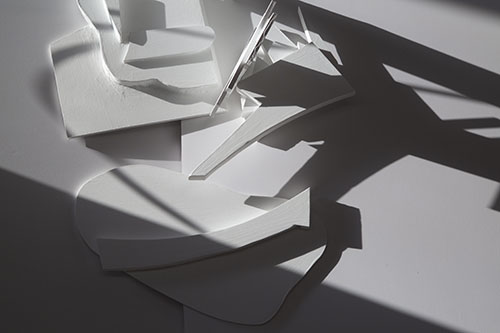
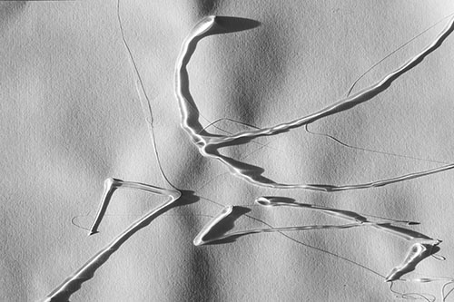
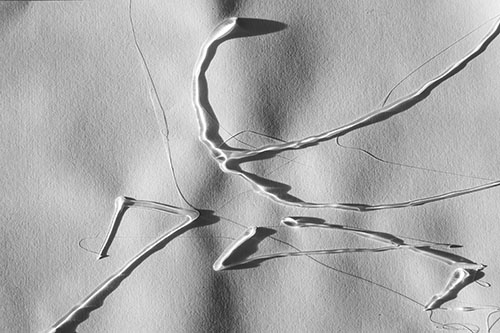

PHASE 1
A secondary set of formal investigations was conducted under the rule set established in part 2. The first "tool set" used consisted of a series of foam core extrusions that generated in parrallel to imagery that appeared in parts 1-2 of the identity development.
PHASE 2
The second "tool set" used was hotglue on paper, photographed in the evenings when the sun was casting longer shadows. The initial descision to continue this formal excercise using physical media was primarily due to the expected and somewhat clinical approach that my purely digital design work was starting to take.
 

PHASE 3
The final tool sets were chosen to address the inevitable return to digital production methods, forms generated would have to be scaleless (unlike photographs) and much lighter weight (in terms of memory). Live traces of the photographs from phase 2 were created as well as cleaner vector marks to aid in clarifying the compositions that would be later generated.